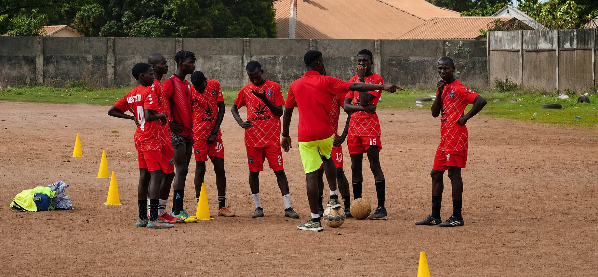

Akademie

BK West United FC
Die Akademie in Bakoteh verfolgt einen ganzheitlichen Ansatz: Sie unterstützt die sportliche wie die persönliche Entwicklung der Jugendlichen und ist stark in der Community verankert — durch Jugendprogramme, Schulkooperationen und Charity-Events.
Mehr erfahren →